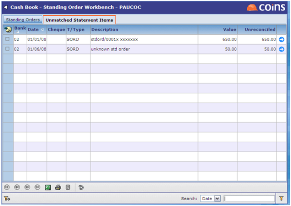
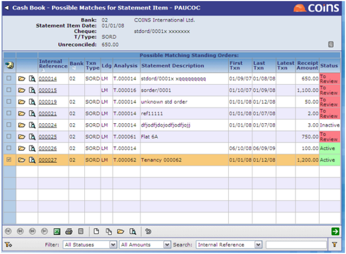
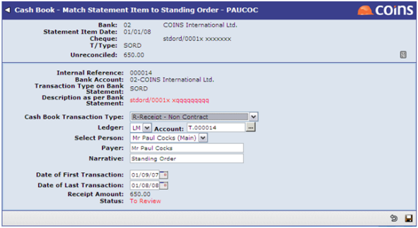

to take you to a list of potential matching standing orders:
to take you to a list of potential matching standing orders:
After running Auto Bank Reconciliation, if a match cannot be found for the statement item, this will be shown on the 'Unmatched Statement Items' tab in Standing Orders:

From here you can click to take you to a list of potential matching standing orders:

If no matches are found, you can click on  to add a new standing order into the Standing Orders.
to add a new standing order into the Standing Orders.
Alternatively if a match is identified you can click  :
:

This will automatically update the fields required for a match. These will be shown in red. If you are happy with the proposed changes, click  ; this will update the standing order record.
; this will update the standing order record.